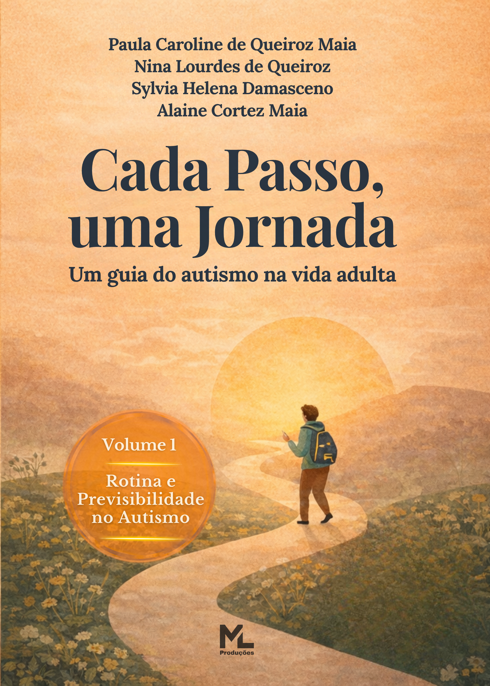

Um livro sensível, técnico e profundamente humano sobre rotina, previsibilidade, sobrecarga e funcionamento no autismo adulto.
Esta obra apresenta uma nova perspectiva: a rotina não como prisão, mas como ferramenta de regulação, organização e autonomia.
“Cada Passo, uma Jornada” propõe uma leitura inovadora sobre o autismo na vida adulta, abordando como a previsibilidade e a organização do ambiente influenciam diretamente o funcionamento, a ansiedade, a procrastinação e o desgaste cotidiano.
O livro aborda desafios reais enfrentados por adultos autistas: sobrecarga, dificuldade de iniciar tarefas, ansiedade, sensação de caos interno e desgaste invisível.
A obra mostra como rotina e previsibilidade funcionam como suporte ao processamento interno, reduzindo a carga cognitiva e emocional do dia a dia.
O foco não é impor padrões rígidos, mas construir formas possíveis de viver melhor, respeitando limites, ritmo e individualidade.
“A rotina não deve ser entendida como repetição, mas como organização do fluxo da vida cotidiana.”
A obra foi construída para ser acessível, profunda e prática, permitindo diferentes formas de leitura e aplicação no cotidiano.
Um livro para autistas adultos, familiares, profissionais, educadores e todos aqueles que desejam compreender o impacto da previsibilidade, da estrutura e do ambiente na experiência humana.
Quero acompanhar o lançamento